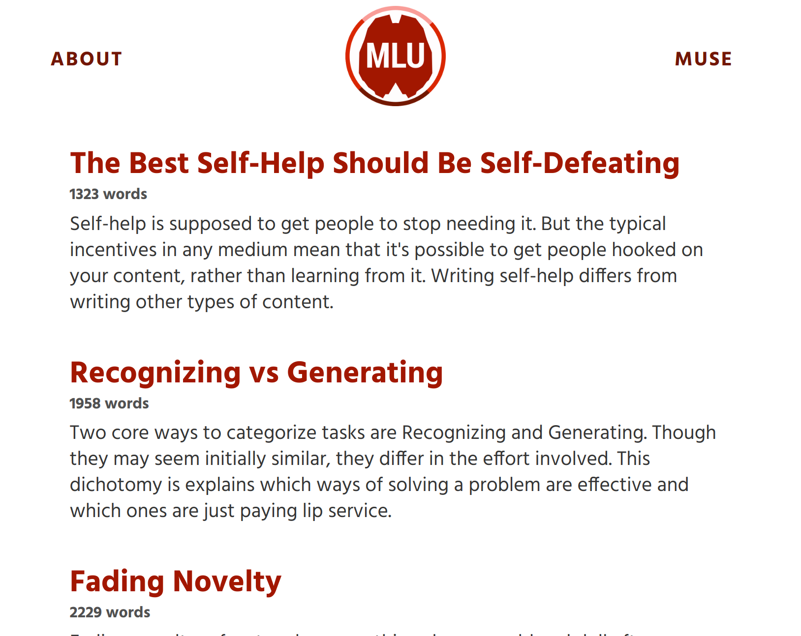

Owen Shen
About Me
Hi! I'm currently an undergraduate studying Computer Science at the University of California, San Diego.
I’m interested in decision-making, productivity, and how to do the most good in the world. Aside from coding, I also do a fair bit of writing and graphic design, which several of the projects on this site showcase. You can find all my code on GitHub.
You’re here, and maybe that means we should chat! To get in contact, you can shoot me an email at owenshen24 (at) gmail (dot) com or book a time on Calendly.

mindlevelup

mindlevelup is a blog about human rationality; it's a look at how humans make decisions and how we might be able to make better ones. New essays come out almost every week, ranging from somewhat well-researched to purely speculative. Topics cover habits, planning, motivation, and introspection.
For a more structured overview, I’ve also written a book that’s adapted much of its content from the blog posts. That’s freely available here.
Primers

Aside from the musings on mindlevelup, I’ll periodically churn out much larger, more researched essays that are accompanied by illustrative graphics. The images all have a consistent flat style; they're adorably designed to entice you to read the hefty, multi-thousand word essay within.
Planning 101:
An overview of planning techniques to counter overconfidence and the research behind them.

Habits 101:
An overview of how habits work and techniques to create and break them.

Attractor Theory:
A hybrid model of motivation that combines willpower and environmental factors.

The Ancient God Who Rules High School:
Misaligned incentives in the US high school system.

Charting Death

Charting Death is a data science project that examines the ways we die and compares that to newspaper mentions of the aforementioned causes of death. As one might expect, it turns out the certain causes of death (heart disease, kidney disease) are underrepresented in the news and others (homicide, terrorism) are overrepresented.
The visualization below, based off this data, is currently the most upvoted post of all time on Reddit's r/dataisbeautiful, at 100,000+ upvotes and has been viewed over 2 million times.
Double Crux

Double Crux was a first attempt at making an online format for the Double Crux conversational technique.
It’s designed to be a forum that hosts split-screen discussions for two people. Each discussion’s sub-points (“cruxes”) can be recursed upon to form new split-screen discussions. The code can be found on Github here.